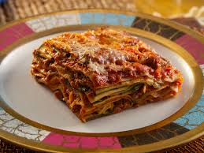

Ricetta della lasagna bolognese

Che cos'è la lasagna?
La lasagna alla bolognese è un primo piatto classico e buonissimo della cucina italiana, uno dei simboli per eccellenza delle riunioni familiari a casa di nonni e parenti.
Sono facilissime da fare, si preparano con un delizioso ragù di carne che conquisterà tutti quanti!
Ingriedienti:
- Per le lasagne
- 250g sfoglia pronta per lasagne
- 400g besciamella
- formaggio grattugiato
- Per il ragù alla bolognese
- 150g pancetta dolce
- carote
- cipolle
- coste di sedano
- 500g tritato di manzo
- 200ml vino rosso
- 400ml passata di pomodoro
- 200ml latte
- olio extravergine di oliva
- sale fino
- pepe
Preparazione:
- Cominciamo la preparazione del ragù alla bolognese rosolando la pancetta da sola.
Teniamola sul fuoco a fiamma alta fino a quando non si sarà sciolto un po’ di grasso.
- Aggiungiamo olio d’oliva, sedano, carota e cipolla tritati e mescoliamo con un mestolo. Cuociamo il soffritto per qualche minuto.
- Sgraniamo un pochino la carne tritata mentre la versiamo in pentola, e mescoliamo per distribuirla in modo uniforme. Dopo 5 minuti, sfumiamo con il vino e continuiamo la cottura per altri 5 minuti.
- A questo punto uniamo la passata di pomodoro e aggiustiamo di sale e pepe, dando una bella mescolata.
- Facciamo cuocere a fiamma bassissima per almeno un’ora e mezzo con il coperchio, per far addensare il nostro ragù.
- Versiamo in pentola anche il latte e finiamo di cuocere per altri 5 minuti. La consistenza deve essere omogenea e soprattutto cremosa, se serve lasciamo cuocere anche per 10 minuti.
- Una volta che il ragù è pronto possiamo assemblare la lasagna: mettiamo sul fondo di una pirofila da forno qualche cucchiaio di ragù.
- Sistemiamo sopra una sfoglia per lasagne e ricopriamo con altro ragù.
- Lasciamo scivolare sul ragù qualche cucchiaio di besciamella.
- Cospargiamo con una manciata di formaggio grattugiato.
- Copriamo con un’altra sfoglia e ripetiamo: ragù, besciamella, formaggio grattugiato. Nell’ultimo strato possiamo abbondare sia con la besciamella che con il formaggio, per un gratin super appetitoso!Inforniamo e cuociamo in forno preriscaldato a 180 °C per 40 minuti.
- Sforniamo, attendiamo qualche minuto per farle assestare e poi serviamo belle fumanti le nostre lasagne alla bolognese!